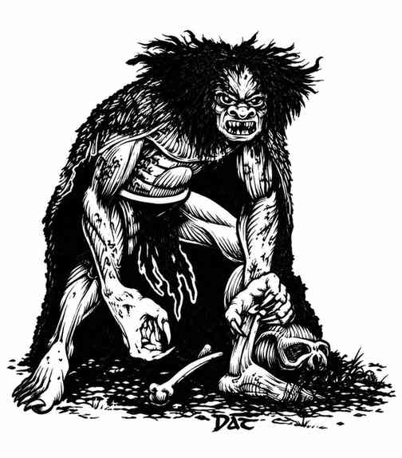
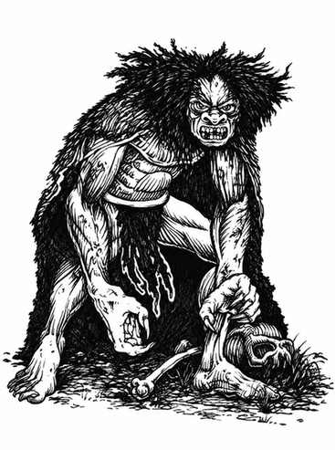

怨魂 · Wight

 |
|
“怨魂”一词已失去原本“人”的含义，如今专指通常居住在坟丘或地下墓穴中的不死之人。它们极度邪恶、憎恨一切生命，避开强光并厌恶阳光。
怨魂同时存在于正常位面和物质位面的负能量位面，因此只有银制或魔法武器能伤害它们。每次命中都会吸取 1 个生命能级，目标同时失去伤害造成的 1–4 点生命值，以及一个经验等级和该等级带来的所有加值（生命骰、职业加值、盗贼能力、法术等级等）。例如 9 级魔法师被怨魂命中后，会失去 1–4 点生命值并降为 8 级，使用 8 级魔法师的生命值、法术和战斗能力。
怨魂不受睡眠、魅惑、定身和寒冷法术影响，毒素和麻痹也无法伤害它们。每瓶命中的圣水造成 2–8 点伤害；死者复生术会摧毁怨魂。被怨魂完全吸干生命能量的人类会变成受杀死者控制、力量减半的怨魂。